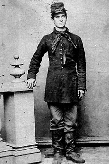

|

NAME: George Garman
BORN: 1843
DIED: 1924
ALLEGIANCE: Union
HIGHEST RANK: Corporal
UNIT: 7th Pennsylvania Reserves Infantry (36th Pennsylvania
Volunteers), Company K
RECORD: Enlisted June 4, 1861, and mustered in on
July 27 at Washington, D.C. Promoted to corporal, April 1,
1863. Captured May 5, 1864, in Virginia during the Battle of
the Wilderness. Mustered out January 29, 1865.
|
|
The Civil War was an on again, off again experience for
George Garman. The 17-year-old Philadelphia blacksmith
joined the 7th Pennsylvania Reserves Infantry in June 1861.
His regiment was called to Washington, D.C., on July 21, the
day Union and Confederate forces clashed in the First Battle
of Bull Run. But by the time Garman and his comrades got to
the capital, the Union army's confidence had been shattered
by defeat and disgrace at Bull Run. No further combat would
be attempted that year.
Garman and the 7th waited at Washington until March 1862,
when they sailed to the Virginia Peninsula with the Army of
the Potomac. Finally, the 7th was in the field. Still,
Garman did not see his first real battle until the 7th
fought at Gaines' Mill on June 27th--more than a year since
he had enlisted.
The rest of 1862 was action-packed. Garman and the 7th
fought through the Seven Days' Battles, then joined the
Union Army in Virginia for the Second Battle of Bull Run on
August 29th and 30th. Back in the Army of the Potomac,
Garman fought at South Mountain and Antietam in Maryland on
September 14th and 17th, respectively. The 7th finished 1862
battling the Confederate right at Fredericksburg, Virginia,
on December 13th, capturing the flag of the 19th Georgia.
Enduring the humiliating Mud March in late January 1863,
Garman and the 7th returned to Washington in February to
recover from their whirlwind year. Serving around the
capital and Alexandria, Virginia, they settled into another
long period of noncombat duty. Not until April 1864--more
than a year later--did the 7th again take the field. Garman
did so as a corporal.
On May 5, Garman was fighting in the nightmarish battle in
Virginia's dense Wilderness when the 7th became separated
from the main Union line. Nearly the entire regiment was
captured. Once again, Garman was out of action. This time,
however, he was in for the battle of his life. Taken to
Georgia's Andersonville Prison for five months, then to a
prison at Florence, South Carolina, for another two, Garman
struggled to stay alive. Somehow, he survived.
On January 29, 1865, he left war behind once and for all.
Mustered out, he returned to Philadelphia to raise a family.
But in memory of his soldier days, he named his firstborn
son George Meade Garman for his old commander, Major General
George Meade.
Source: Civil War Times Illustrated
39:7 (February 2001), 88.
|